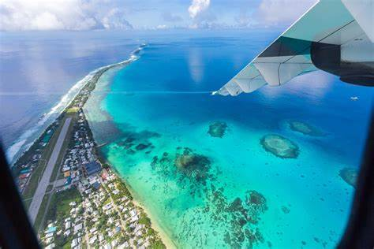

Welcome to our Tuvalu photo tour website! Tuvalu, a hidden gem in the Pacific Ocean, is an archipelago of stunning islands known for their pristine beaches, vibrant coral reefs, and rich Polynesian culture.
Despite its small size, Tuvalu offers a unique and tranquil experience, where visitors can immerse themselves in the serene beauty of untouched nature and the warm hospitality of the local people.
From exploring the colorful underwater world teeming with marine life to experiencing traditional dance and music, Tuvalu promises an unforgettable journey.
Join us as we showcase the captivating landscapes, cultural treasures, and culinary delights that make Tuvalu a paradise worth discovering.